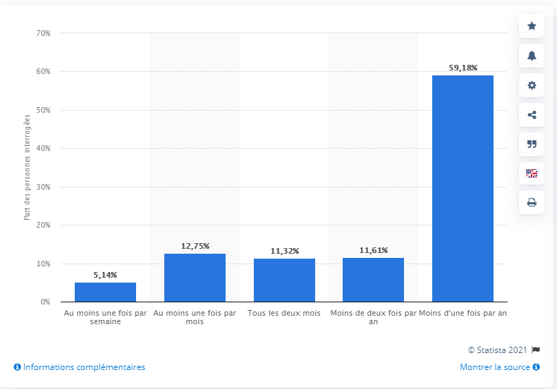

Etude de marché
Les caractéristiques du marché
Le marché de l'habillement pour enfants est en plein essor en France, au vu du nombre de naissances, qui, malgré une légère baisse
ces cinq dernières années, continue néanmoins d'être très porteur. On distingue généralement deux segments, le premier étant celui
des nourrissons, entre 0 et 2 ans et le second étant celui des enfants, entre 2 et 14 ans.
Le marché de l'habillement à tendance à baisser ces quelques dernières années, avec des parts de marché qui reculent de manière constante,
alors que celui consacré aux enfants et aux bébés ne cesse de croître. En effet, le marché s'impose de lui-même, puisque les parents
sont obligés de s'adapter à la croissance de leurs enfants et donc de renouveler plus fréquemment les vêtements.
Le chiffre d'affaires du secteur est de 1,8 milliards d'euros à la fin de l'année 2018.
Les acteurs du marché
Sur le marché de l'habillement pour enfants, il y a plusieurs types d'acteurs.
Les premiers sont les enseignes spécialisées, du type Aubert, Jacadi, Petit Bateau, Okaidi, Z ou encore Du Pareil Au Même et Orchestra.
Les seconds sont donc les enseignes plus généralistes, les chaînes de magasins low cost, du type Gémo, Kiabi, la Halle et autres.
Ils représentent une concurrence très importante pour les premiers car proposent des gammes de vêtements diverses et à des prix très compétitifs.
La grande distribution est également devenue au fil du temps un sérieux danger pour les plus grandes marques, les articles étant considérés
comme de meilleure qualité que dans les magasins low cost mais souvent moins chers que dans les enseignes spécialisées.
Notons également la présence d'internet, premier supermarché du monde avec une multitude de boutiques en ligne qui peuvent se permettre de proposer
des tarifs encore plus avantageux aux consommateurs.
Les parents sont enfin des acteurs très actifs dans ce secteur puisqu'ils sont nombreux à revendre les affaires de leurs enfants au fil du temps,
sur les réseaux sociaux notamment.
Tendances et perspectives
La tendance bio sera amenée à se développer de plus en plus, même si les enseignes spécialisées devront également se mettre à vendre autre chose que des vêtements
pour pouvoir subsister sur le long terme.
Ce marché présente de nombreuses opportunités pour le futur, mais ces opportunités sont davantage liées au développement plus général de tout ce qui concerne
les articles de puériculture. En effet, le taux de naissances tend à diminuer ces dernières années, ce qui oblige les fabricants et diverses enseignes à trouver d'autres moyens de subsistance.
Les usagers
Les usagers sur ce type de segment sont les individus issus de la génération Y ainsi que la génération X pour tout ce qui concerne les grands parents.
Globalement, les consommateurs ne veulent pas acheter des produits trop chers car ils savent qu'il va falloir renouveler le stock très souvent.
En outre, il n'en reste pas moins qu'il existe une certaine exigence sur la qualité des produits, avec une tendance bio qui fait clairement son apparition dans les mœurs.
Taille du marché
Même si le taux de natalité est en baisse, le marché du prêt-à-porter enfant en France atteignait en 2018, 1,8 milliards d’euros de chiffre d’affaires, soit 18 % du marché de l’habillement global.
On estime à environ 700 euros, les dépenses réalisées pour un enfant en un an. En effet, les parents doivent sans cesse renouveler les habits de leurs enfants qui grandissent très vite.
Preuve en est au cours du confinement d’avril 2021, les boutiques et les rayons de supermarché de vêtements devaient fermer sauf les sections enfants qui pouvaient rester ouvertes.
Fréquence à laquelle les Français achètent des vêtements pour bébé 2018
Publié par Statista Research Department, 20 nov. 2018

Cet histogramme indique la fréquence à laquelle les consommateurs français achetaient des vêtements pour bébé en 2018. Selon ce sondage de ProdegeMR,
plus de 10 % des répondants en achetaient au moins une fois par mois.
Principaux segments de marché sont :
Les vêtements bébé classiques
- Naissance 0 - 2 ans
- Enfants 2 - 14 ans
Les vêtements bébé bio :
- Naissance 0 - 2 ans
- Enfants 2 - 14 ans
Par ailleurs on peut distinguer différents segments prix :
- Économique
- Intermédiaire
- Supérieur
- Haut-de-gamme et luxe
Les vêtements de bébé (0 - 2 ans) regroupent des pièces du haut (brassières, chemises, tee-shirts, polos...) ainsi que des robes pour les filles,
des pantalons pour filles et garçons ou pour garçons, des combinaisons (filles et/ou garçons) et des ensembles.
Leurs matières sont variées, avec pour caractéristiques communes d’être confortables, saines à porter et résistantes aux lavages.
Le coton est très largement utilisé dans l’industrie du prêt-à-porter bébé avec un engouement croissant pour le coton bio,
non traité et teint avec des techniques et des teintures naturelles.